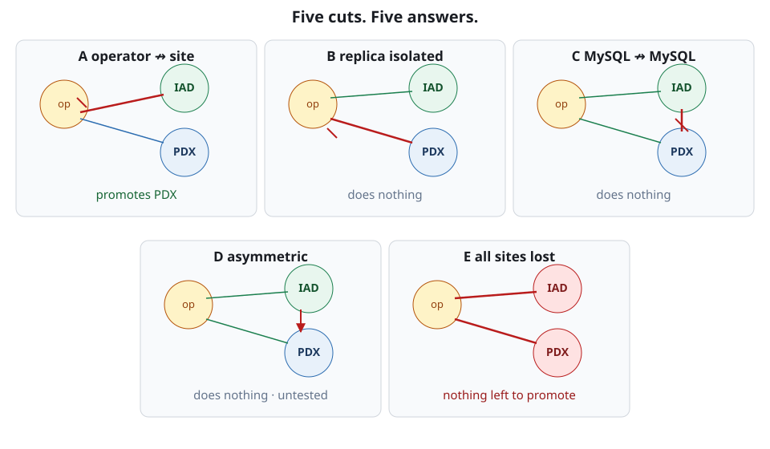

Five partitions, five answers
Five documented partition shapes, five different operator responses, and an honest account of which ones are actually tested. Plus why the partition you injected may not have partitioned anything.
By the end of this topic you can
- Match an observed symptom to one of the five documented partition scenarios
- Explain why a broken MySQL-to-MySQL link is not a failover
- Work the on-call partition checklist without guessing
playground is healthy on your three-site k3d playground: iad writable, pdx read-only and
replicating, the counter app reading and writing without complaint. Then the page: “the network is partitioned.”
That is not a diagnosis. Five different failures wear it, and they do not share a response — one
promotes, three deliberately do nothing, and one has never been injected in a test.
Five shapes, not one
Bloodraven documents the five in docs/docs/network-partitions.mdx, labelled A to E. What separates
them is not how bad the network is. It is which link broke, and so what each of two independent
deciders can still see. The operator decides from what it can poll — one SELECT @@read_only per
site, per tick. The sidecar decides from what it can reach — Bloodraven, or any peer. A partition
rarely blinds both. The figure is the map; the match below is the taxonomy; the list is why each answer is right.

- A — operator cannot reach site A, site B reachable.
iadgoesunreachableafter 6 s (2 spollInterval× 3failureThreshold);pdxis promoted. An isolated-but-aliveiadself-fences at roughly T+20 s, the shippedleaseTimeoutthe playground does not override. - B — replica isolated, primary reachable. Promoting away from a healthy primary costs availability and risks data loss for nothing. And a read-only instance never self-fences — there is no writability to take away.
- C — MySQL-to-MySQL link broken, operator reaches both. Both sites poll cleanly; only the binlog stream is severed. This one earns its own section.
- D — asymmetric peer reachability.
iadreachespdx,pdxcannot reachiad. One reachable peer keeps the primary writable, so nothing self-fences and nothing promotes. - E — both sites unreachable to the operator. Total loss: no reachable candidate exists to promote at all.
| iad unreachable after 6 s; pdx still read-only | A — operator promotes pdx; isolated iad self-fences at ~T+20 s |
|---|---|
| pdx unreachable or lag climbing; iad still writable | B — no failover, no self-fence (replica never self-fences) |
| Both sites poll fine; replica IO thread stopped | C — no automatic action; indistinguishable from lag |
| Polls look healthy; peer checks fail one way only | D — nothing promotes, nothing fences; analysis-only, never injected |
| Every site unreachable | E — no reachable candidate; any still-up primary self-fences |
Coverage, stated honestly
Two of the five have live-cluster chaos coverage. A: scenario 09 partitions the active pod with a
deny-all NetworkPolicy; scenario 06 reaches the same self-fence by scaling the operator and every
peer to zero. B: scenario 17, a negative-assertion suite that fails if partitioning the replica ever
does trigger a failover or a self-fence. C lives only in the deterministic simulator, as the
partitionPair fault. E is touched sideways by scenario 11, which reaches total loss by scaling
sites down, not by breaking a network.
D is analysis only — the simulator cannot express it. Its link state is keyed by a symmetric
pairKey(a, b), which sorts the two site names before joining them, so “iad reaches pdx” and
“pdx reaches iad” are the same key. One-way reachability is unrepresentable in the fault model,
and everything above about D is argued from the code, never observed under injection. That is not an
apology. An untested failure mode is a known unknown you plan around; one you believed was tested
is the one that hurts.
A broken replication link is not a failover
The instinct is to treat “replication is broken” as an emergency the operator should resolve. It will not, and the reason is epistemic rather than lazy: from the operator’s point of view this mode is indistinguishable from “the replica fell behind because of I/O pressure”. The evidence is identical. Human judgement decides.
Connect it to the matrix you already know. The failover row needs zero writable sites, at least one
unreachable and at least one read-only. In scenario C iad is still writable, so that row is
unreachable by construction. Lag runs on a separate channel entirely:
spec.replication.maxLagSeconds (default 300, 30 in the playground) drives only the
ReplicationLagging Degraded condition, never a promotion. So your options are the human ones —
keep serving writes on iad, or wait for pdx to catch up and run a planned failover, which is
RPO 0 by construction. The operator declining to act here is the system working.
Naive partition tests are no-ops
Two traps have already caught this project. Host-netns iptables rules on a k3d node do not partition Kubernetes Service traffic: kube-proxy’s DNAT happens in different chains, so the operator keeps reaching MySQL through the ClusterIP while you believe you have severed it. And a NetworkPolicy can be silently ineffective — chaos scenario 33 found this CNI evaluating the policy post-DNAT. The rule excepted the kube-dns ClusterIP, but the packet’s destination was already a CoreDNS pod IP by the time the CNI saw it, so the exception never matched and DNS resolved through the entire 45-second hold.
while true; do if nslookup kubernetes.default.svc.cluster.local >/dev/null 2>&1; then echo PROBE dns=ok; else echo PROBE dns=fail; fi; sleep 2; donePROBE dns=ok# canary policy v1: except the kube-dns ClusterIP only, hold 45sPROBE dns=ok
PROBE dns=ok
PROBE dns=ok# canary policy v2: except the ClusterIP AND every CoreDNS backend pod IPPROBE dns=failThe rule, hard: a chaos experiment that injects nothing produces a confident false pass, and a green
run of a broken experiment is worse than none. Every partition test needs an independent check that
the partition exists, run against a disposable canary before the real target is touched — scenario
33 now refuses to proceed unless its canary reaches dns=fail. The reported state can never be that
check: in Unit 2’s frozen-poll incident the operator reported activeSite=iad, state=writable, Ready=True for two minutes under a deny-all policy. Partitions surface as believable status, not
as errors.
Why the fence has to come from inside
Partitions become a data-integrity topic the moment you ask what stops a partitioned primary from writing. Four Kubernetes facts, none of them a bug:
- Kubernetes will not delete pods merely because a node is unreachable. The pod sits
TerminatingorUnknownindefinitely — deliberately, to protect at-most-one identity. - Force-deleting it breaks at-most-one. The API object disappears while the process may still be running, and still writing, on the partitioned node.
Terminatingis set by the API server, not the kubelet. On an unreachable node the container never gets the message: it keeps running and keeps writing to the PV.ReadWriteOncemeans one node, not one pod. Storage attach is not fencing.
The conclusion for playground is unavoidable: nothing above MySQL stops a partitioned
iad from writing — not the scheduler, not the API server, not the volume layer, and certainly not
you with a kubectl delete --force. That is why a partitioned site must fence itself.
The on-call checklist
Work it in order.
- Confirm the partition is real before believing any symptom — reachability from a third vantage point, never the operator’s own status.
- Identify the shape.
kubectl get mysqlfailovergroup playground -o jsonpath='{.status.activeSite}', then per-site state:-o jsonpath='{range .status.sites[*]}{.name}: {.state} lag={.secondsBehindSource} recovery={.recoveryState}{"\n"}{end}'. Which sites are unreachable, and is anything still writable? That maps to A–E directly. - Read the sidecar logs for which side fenced itself.
SELF-FENCED: super_read_only=ON has been set, only Bloodraven can restoreis the line; theSELF-FENCING:line above it names the rule. - Decide whether the operator has an action at all. Did
bloodraven_failovers_totalmove? If not, it chose to alert rather than promote — in shapes B, C and D that is correct, not a stall. - Only now decide whether to intervene. If a site returns carrying
divergentGtid, do not manually attach it as a replica; take the reclone path.
You can now name the shape from a symptom, you know which shapes are exercised and which are merely argued, and you will verify an injection before trusting its result. Every shape here assumed the operator was alive to watch it. Next: what keeps working when the operator pod is what goes away.
Flashcards
Partition scenario A
The operator cannot reach site A while site B is reachable — the only one of the five shapes that produces an automatic promotion. Exercised by chaos scenarios 09 and 06 plus the DST fault partitionOperatorSite.
Partition scenario B
The replica site is isolated while the primary stays reachable to the operator. Exercised by chaos scenario 17, a negative-assertion suite that fails if a failover or a self-fence ever happens.
Partition scenario C
The MySQL-to-MySQL link is broken while the operator still polls both sites cleanly. Covered by the deterministic simulator only, as the partitionPair fault — no live chaos scenario exercises it.
Partition scenario D
Asymmetric peer reachability — iad reaches pdx but pdx cannot reach iad. Analysis only: the DST fault model keys link state on a symmetric pairKey, so one-way reachability is unrepresentable and no test of any kind exercises this shape.
Partition scenario E
Every site is unreachable to the operator — total loss, no promotion, because no reachable candidate exists. Covered only indirectly, by chaos scenario 11, which scales every site to zero rather than breaking a network.
Why a broken cross-site replication link triggers no automatic operator action
Because from the operator's point of view it is indistinguishable from "the replica fell behind because of I/O pressure" — the observable evidence is identical, so human judgement decides.
Injection trap: host-netns iptables rules on a k3d node
They do not partition Kubernetes Service traffic — kube-proxy's DNAT happens in different chains, so the operator keeps reaching MySQL through the ClusterIP while you believe the link is severed.
Injection trap: how a NetworkPolicy becomes a silent no-op
A CNI that evaluates the policy post-DNAT sees the backend pod IP, so a rule written against the Service ClusterIP never matches — chaos 33's DNS deny kept resolving through the whole 45-second hold.
What Kubernetes does with a pod on a node that has become unreachable
Nothing. It refuses to delete the pod, which sits Terminating or Unknown indefinitely — deliberately, to protect at-most-one identity.
What force-deleting a stuck Terminating pod costs you
At-most-one identity: the API object disappears while the process may still be running on the partitioned node.
Who sets a pod's Terminating status
The API server, not the kubelet — which is why on an unreachable node the container never gets the message and keeps running.
What ReadWriteOnce actually restricts
Access to one node, not one pod — storage attach is not a fencing mechanism.
Quiz
Show answer
Answer: Scenario B — the replica site is isolated while the primary stays reachable
The isolated site is the replica and the primary is untouched, which is scenario B: no failover, and no self-fence either, because a read-only instance has no writability to take away. Scenario A is tempting because it is also 'operator cannot reach a site' — but A is the shape where the unreachable site is the one holding writes, which is what makes a promotion available at all; here promoting would move writes away from a healthy primary. Scenario C requires the operator to still poll both sites cleanly, and pdx has stopped answering polls, so the discriminator rules it out. Scenario E needs every site unreachable; iad is answering. (objective 7)
The isolated site is the replica and the primary is untouched, which is scenario B: no failover, and no self-fence either, because a read-only instance has no writability to take away. Scenario A is tempting because it is also 'operator cannot reach a site' — but A is the shape where the unreachable site is the one holding writes, which is what makes a promotion available at all; here promoting would move writes away from a healthy primary. Scenario C requires the operator to still poll both sites cleanly, and pdx has stopped answering polls, so the discriminator rules it out. Scenario E needs every site unreachable; iad is answering. (objective 7)
Show answer
Answer: Scenario C — the MySQL-to-MySQL link is broken while the operator reaches both
B and C share the visible replication symptom, so the discriminator is the operator's own reachability: in C the operator polls both sites cleanly and only the binlog stream is severed, which is exactly what is described. Scenario B is the near-miss — it looks identical from the replication metrics alone, but B means the replica site is isolated, and a site that answers SELECT @@read_only every two seconds is not isolated. Scenario D is about one-way peer reachability between sidecars and would not stop the replication stream on its own. Scenario A requires a site to be unreachable to the operator, and neither is. (objectives 7, 9)
B and C share the visible replication symptom, so the discriminator is the operator's own reachability: in C the operator polls both sites cleanly and only the binlog stream is severed, which is exactly what is described. Scenario B is the near-miss — it looks identical from the replication metrics alone, but B means the replica site is isolated, and a site that answers SELECT @@read_only every two seconds is not isolated. Scenario D is about one-way peer reachability between sidecars and would not stop the replication stream on its own. Scenario A requires a site to be unreachable to the operator, and neither is. (objectives 7, 9)
Show answer
Answer: False
The reversal: crossing the lag threshold moves a condition, never a primary. spec.replication.maxLagSeconds drives only the ReplicationLagging Degraded condition — it is not a promotion gate and it is not a promotion trigger. The failover row of the decision matrix needs zero writable sites, and iad is still writable, so there is no path to a promotion no matter how far pdx falls behind. This is deliberate rather than lazy: from the operator's point of view a broken link and a replica starved of I/O look identical, so acting on the difference would mean guessing. Human judgement decides, and the operator declining to act is the system working. (objective 8)
The reversal: crossing the lag threshold moves a condition, never a primary. spec.replication.maxLagSeconds drives only the ReplicationLagging Degraded condition — it is not a promotion gate and it is not a promotion trigger. The failover row of the decision matrix needs zero writable sites, and iad is still writable, so there is no path to a promotion no matter how far pdx falls behind. This is deliberate rather than lazy: from the operator's point of view a broken link and a replica starved of I/O look identical, so acting on the difference would mean guessing. Human judgement decides, and the operator declining to act is the system working. (objective 8)
Show answer
Answer: Nothing about partitions — the injection never landed, since kube-proxy's DNAT is in different chains
Host-netns iptables rules on a k3d node do not partition Kubernetes Service traffic, so the run is a confident false pass: an experiment that injects nothing looks exactly like an experiment that proved the system healthy. The first option treats a green result as evidence of correct behaviour, which is the specific mistake — you cannot grade a response to a stimulus that never arrived. The second reads the operator's own status as ground truth, and status is precisely what a partition makes believable rather than wrong. The fourth invokes a real rule to explain a result the rule never produced, since nothing here ever reached the sidecar's fencing path. The fix is an independent check that the partition exists — a disposable canary, run before the real target is touched. (objective 9)
Host-netns iptables rules on a k3d node do not partition Kubernetes Service traffic, so the run is a confident false pass: an experiment that injects nothing looks exactly like an experiment that proved the system healthy. The first option treats a green result as evidence of correct behaviour, which is the specific mistake — you cannot grade a response to a stimulus that never arrived. The second reads the operator's own status as ground truth, and status is precisely what a partition makes believable rather than wrong. The fourth invokes a real rule to explain a result the rule never produced, since nothing here ever reached the sidecar's fencing path. The fix is an independent check that the partition exists — a disposable canary, run before the real target is touched. (objective 9)
Show answer
Answer:
It may still be running and still writing. Force-delete only removes the API object; Terminating was set by the API server, not the kubelet, so on an unreachable node the container never gets the message and keeps writing to its PV. That breaks at-most-one identity: the cluster now believes the pod is gone while a second writable MySQL may exist. ReadWriteOnce does not save you either — it restricts access to one node, not one pod, so storage attach is not fencing. Since nothing above MySQL can be relied on to stop a partitioned iad from accepting writes, the fence has to be a decision the site makes about itself: the sidecar's self-fence.
A full-credit answer shows: A strong answer covers: (1) the process may still be running and still writing to the PV; (2) force-delete removes only the API object and therefore breaks at-most-one; (3) Terminating is set by the API server, not the kubelet, which is why an unreachable node's container never stops; (4) ReadWriteOnce is per node, not per pod, so storage attach is not fencing; (5) the conclusion — a partitioned site must self-fence because no layer above it can be relied on to stop it. An answer that only says "the pod object disappears" has missed the data-integrity consequence.
Kubernetes refuses to delete pods on unreachable nodes on purpose, to protect at-most-one identity; forcing the delete trades that protection for tidiness in the API and buys a possible second writer. All four Kubernetes facts point the same way, and together they are the argument for the sidecar's self-fence being the real barrier rather than a backstop. (objective 9)
Sample answer
It may still be running and still writing. Force-delete only removes the API object; Terminating was set by the API server, not the kubelet, so on an unreachable node the container never gets the message and keeps writing to its PV. That breaks at-most-one identity: the cluster now believes the pod is gone while a second writable MySQL may exist. ReadWriteOnce does not save you either — it restricts access to one node, not one pod, so storage attach is not fencing. Since nothing above MySQL can be relied on to stop a partitioned iad from accepting writes, the fence has to be a decision the site makes about itself: the sidecar's self-fence.
A full-credit answer shows
A strong answer covers: (1) the process may still be running and still writing to the PV; (2) force-delete removes only the API object and therefore breaks at-most-one; (3) Terminating is set by the API server, not the kubelet, which is why an unreachable node's container never stops; (4) ReadWriteOnce is per node, not per pod, so storage attach is not fencing; (5) the conclusion — a partitioned site must self-fence because no layer above it can be relied on to stop it. An answer that only says "the pod object disappears" has missed the data-integrity consequence.
Kubernetes refuses to delete pods on unreachable nodes on purpose, to protect at-most-one identity; forcing the delete trades that protection for tidiness in the API and buys a possible second writer. All four Kubernetes facts point the same way, and together they are the argument for the sidecar's self-fence being the real barrier rather than a backstop. (objective 9)